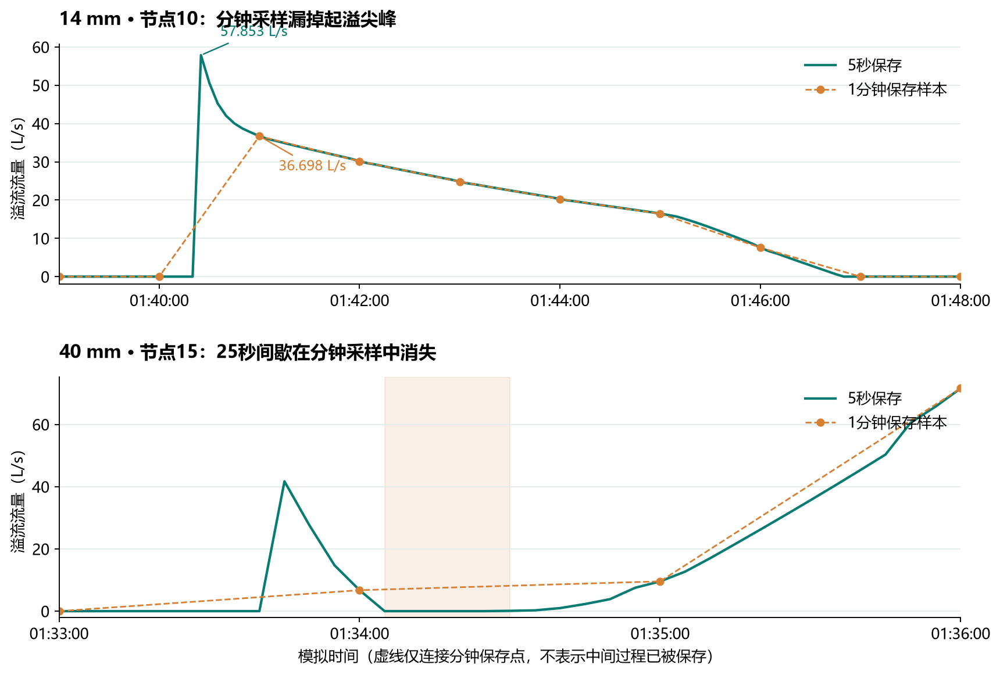

2026-11-16 · SWMM-Agentic4 · 新模拟与真实模型诊断Example1Tokens：三档降雨的溢流与诊断
4小时同形单峰雨，动态波；管网每60秒保存，雨后继续3小时。三场均完成初诊、一次补证复核和图文报告。
主要过程为来水集中与局部排出约束；下游影响按各事件证据分别判断。分钟保存后的节点15识别为一段连续事件，短间歇是否存在需对照5秒结果。
14 mm · 25.678 mm/h峰值雨强
节点10 · 1个事件 · 8.156 m³溢流
10:E001 来水集中：有证据支持；局部输水约束：有证据支持；下游水位影响：不适用；设施运行：不适用；前期蓄水：不适用
打开完整图文报告 →20 mm · 36.683 mm/h峰值雨强
节点10 · 1个事件 · 83.333 m³溢流
10:E001 来水集中：有证据支持；局部输水约束：有证据支持；下游水位影响：不适用；设施运行：不适用；前期蓄水：不适用
打开完整图文报告 →40 mm · 73.366 mm/h峰值雨强
节点10、15 · 2个事件 · 666.612 m³溢流
10:E001 来水集中：有证据支持；局部输水约束：有证据支持；下游水位影响：候选；设施运行：不适用；前期蓄水：不适用
15:E001 来水集中：有证据支持；局部输水约束：有证据支持；下游水位影响：候选；设施运行：不适用；前期蓄水：不适用
打开完整图文报告 →与5秒结果比较
首轮输入 tokens 减少56.0%；完整诊断总 tokens 减少46.1%；包括HTML写作后全部消耗减少55.1%。14 mm保存峰值减少36.6%，40 mm节点15的两次事件合并。
打开完整对照、机制变化与实际用量 →

完整比较记录 · 结构化结果与调用用量
全部最终引用通过核查；这表示来源与对象/事件绑定有效。机制解释及其候选和缺证范围见各报告。地表为合成技术验证场景。